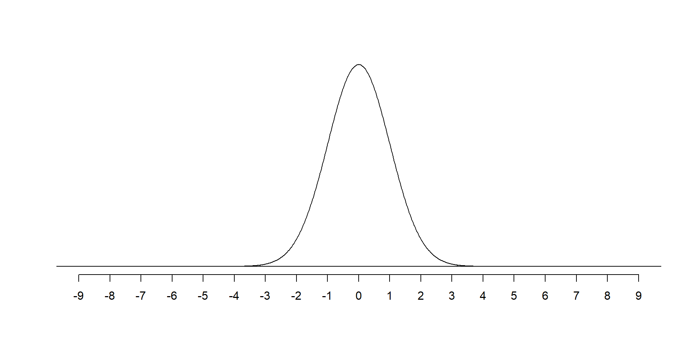
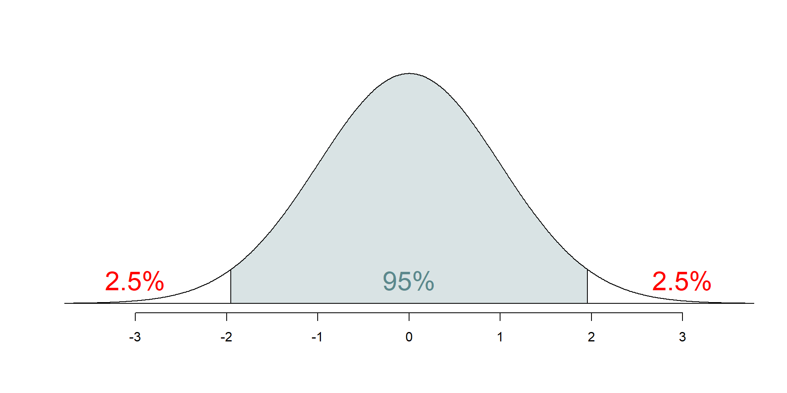
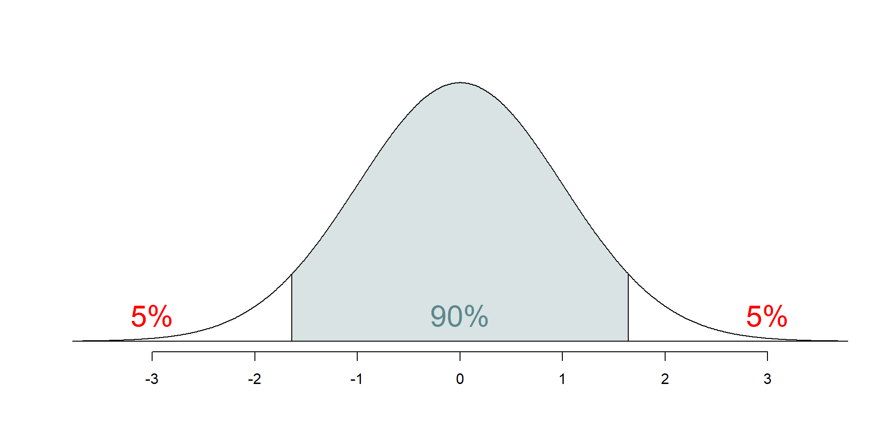
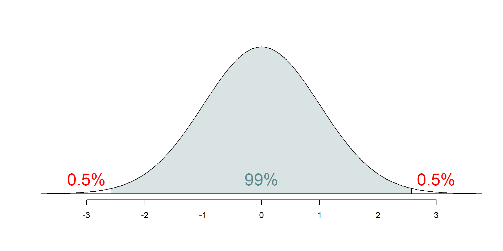
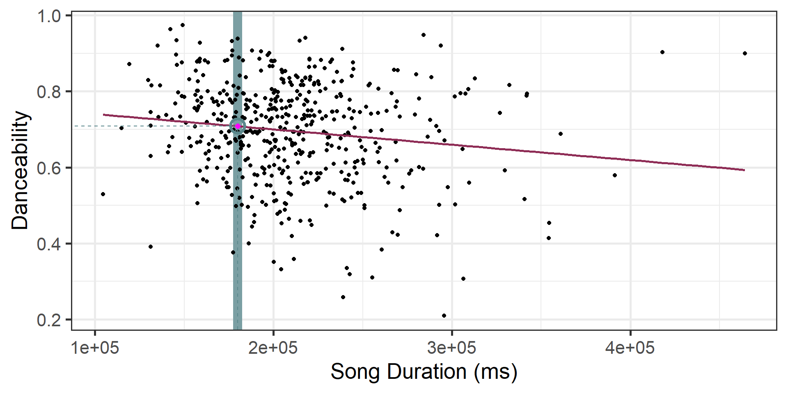
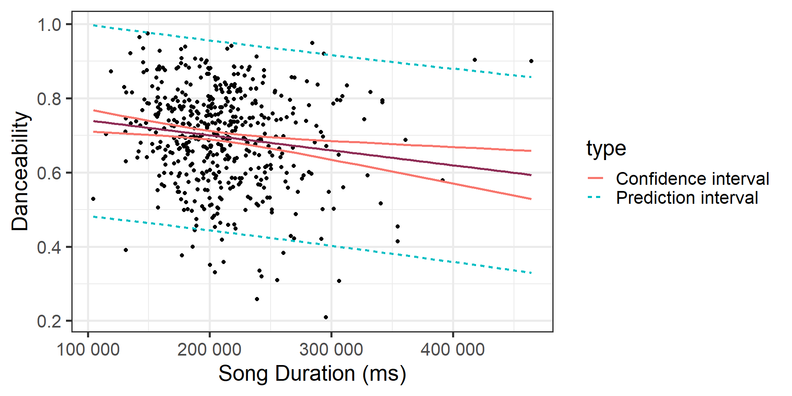
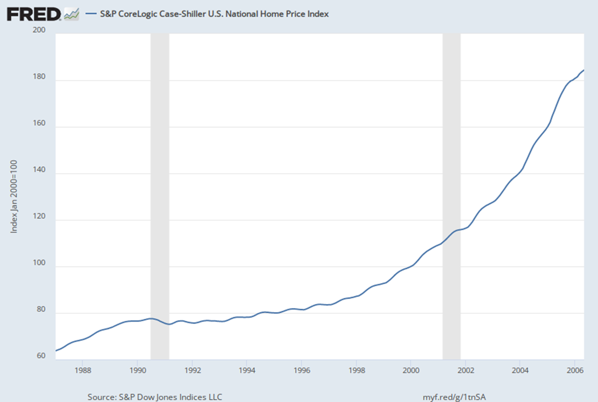
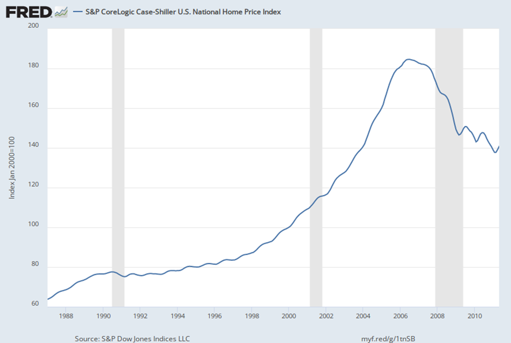

# load packages
library(tidyverse) # for data wrangling and visualization
library(broom) # for formatting model output
library(scales) # for pretty axis labels
library(knitr) # for pretty tables
library(kableExtra) # also for pretty tables
library(patchwork) # arrange plots
# Spotify Dataset
spotify <- read_csv("../data/spotify-popular.csv")
# set default theme and larger font size for ggplot2
ggplot2::theme_set(ggplot2::theme_bw(base_size = 20))SLR: Mathematical models for inference
Application exercise
Complete Exercises 0 and 1.
Mathematical models for inference
Topics
Define mathematical models to conduct inference for the slope
Use mathematical models to
calculate confidence interval for the slope
conduct a hypothesis test for the slope
calculate confidence intervals for predictions
Computational setup
The regression model, revisited
spotify_fit <- lm(danceability ~ duration_ms, data = spotify)
tidy(spotify_fit) |>
kable(digits = 3)| term | estimate | std.error | statistic | p.value |
|---|---|---|---|---|
| (Intercept) | 0.781 | 0.028 | 28.351 | 0.000 |
| duration_ms | 0.000 | 0.000 | -3.151 | 0.002 |
Inference, revisited
- Earlier we computed a confidence interval and conducted a hypothesis test via simulation:
- CI: Bootstrap the observed sample to simulate the distribution of the slope
- HT: Permute the observed sample to simulate the distribution of the slope under the assumption that the null hypothesis is true
- Now we’ll do these based on theoretical results, i.e., by using the Central Limit Theorem to define the distribution of the slope and use features (shape, center, spread) of this distribution to compute bounds of the confidence interval and the p-value for the hypothesis test
Mathematical representation of the model
\[ \begin{aligned} Y &= Model + Error \\ &= f(X) + \epsilon \\ &= \mu_{Y|X} + \epsilon \\ &= \beta_0 + \beta_1 X + \epsilon \end{aligned} \]
where the errors are independent and normally distributed:
. . .
- independent: Knowing the error term for one observation doesn’t tell you anything about the error term for another observation
- normally distributed: \(\epsilon \sim N(0, \sigma_\epsilon^2)\)
Mathematical representation, visualized
\[ Y|X \sim N(\beta_0 + \beta_1 X, \sigma_\epsilon^2) \]

- Mean: \(\beta_0 + \beta_1 X\), the predicted value based on the regression model
- Variance: \(\sigma_\epsilon^2\), constant across the range of \(X\)
- How do we estimate \(\sigma_\epsilon^2\)?
Regression standard error
Once we fit the model, we can use the residuals to estimate the regression standard error, the average distance between the observed values and the regression line
\[ \hat{\sigma}_\epsilon = \sqrt{\frac{\sum_\limits{i=1}^n(y_i - \hat{y}_i)^2}{n-2}} = \sqrt{\frac{\sum_\limits{i=1}^ne_i^2}{n-2}} \]
. . .
- We divide by \(n - 2\) because we have \(n-2\) degrees of freedom
Why do we care about the value of the regression standard error?
Standard error of \(\hat{\beta}_1\)
The standard error of \(\hat{\beta}_1\) quantifies the sampling variability in the estimated slopes
\[ SE_{\hat{\beta}_1} = \hat{\sigma}_\epsilon\sqrt{\frac{1}{(n-1)s_X^2}} \]
. . .
| term | estimate | std.error | statistic | p.value |
|---|---|---|---|---|
| (Intercept) | 7.809197e-01 | 2.754508e-02 | 2.835061e+01 | 0.000000e+00 |
| duration_ms | -4.039000e-07 | 1.282000e-07 | -3.150955e+00 | 1.723739e-03 |
Mathematical models for inference for \(\beta_1\)
Hypothesis test for the slope
Hypotheses: \(H_0: \beta_1 = 0\) vs. \(H_A: \beta_1 \ne 0\)
. . .
Test statistic: Number of standard errors the estimate is away from the null
\[ T = \frac{\text{Estimate - Null Value}}{\text{Standard error}} \\ \]
. . .
p-value: Probability of observing a test statistic at least as extreme (in the direction of the alternative hypothesis) from the null value as the one observed
\[ \text{p-value} = P(|T| > |\text{test statistic}|), \]
calculated from a \(t\) distribution with \(n - 2\) degrees of freedom
Hypothesis test: Test statistic
| term | estimate | std.error | statistic | p.value |
|---|---|---|---|---|
| (Intercept) | 7.809197e-01 | 2.754508e-02 | 2.835061e+01 | 0.000000e+00 |
| duration_ms | -4.039000e-07 | 1.282000e-07 | -3.150955e+00 | 1.723739e-03 |
\[ T = \frac{\hat{\beta}_1 - 0}{SE_{\hat{\beta}_1}} = \frac{-4.04\times 10^{-7} - 0}{1.28\times 10^{-7}} \approx -3.15 \]
Our observed slope, \(\hat{\beta_1} = -4.04\times 10^{-7}\), is \(3.15\) standard errors below what we would expect if there were no linear relationship between duration_ms and danceability.
. . .
Complete Exercise 2 and 3.
Hypothesis test: p-value
| term | estimate | std.error | statistic | p.value |
|---|---|---|---|---|
| (Intercept) | 7.809197e-01 | 2.754508e-02 | 2.835061e+01 | 0.000000e+00 |
| duration_ms | -4.039000e-07 | 1.282000e-07 | -3.150955e+00 | 1.723739e-03 |

Hypothesis test: p-value
| term | estimate | std.error | statistic | p.value |
|---|---|---|---|---|
| (Intercept) | 7.809197e-01 | 2.754508e-02 | 2.835061e+01 | 0.000000e+00 |
| duration_ms | -4.039000e-07 | 1.282000e-07 | -3.150955e+00 | 1.723739e-03 |
. . .
The probability of obtaining an observed slope providing stronger evidence for the alternative hypothesis, if we assume that the null hypothesis is true, is \(1.72\times 10^{-3}\).
Understanding the p-value
| Magnitude of p-value | Interpretation |
|---|---|
| p-value < 0.01 | strong evidence against \(H_0\) |
| 0.01 < p-value < 0.05 | moderate evidence against \(H_0\) |
| 0.05 < p-value < 0.1 | weak evidence against \(H_0\) |
| p-value > 0.1 | effectively no evidence against \(H_0\) |
Important
These are general guidelines. The strength of evidence depends on the context of the problem.
Hypothesis test: Conclusion, in context
| term | estimate | std.error | statistic | p.value |
|---|---|---|---|---|
| (Intercept) | 7.809197e-01 | 2.754508e-02 | 2.835061e+01 | 0.000000e+00 |
| duration_ms | -4.039000e-07 | 1.282000e-07 | -3.150955e+00 | 1.723739e-03 |
- The data provide convincing evidence that the population slope \(\beta_1\) is different from 0.
- The data provide convincing evidence of a linear relationship between the duration of a song and it’s danceability.
. . .
Complete Exercises 4-7.
Confidence interval for the slope
\[ \text{Estimate} \pm \text{ (critical value) } \times \text{SE} \]
. . .
\[ \hat{\beta}_1 \pm t^* \times SE_{\hat{\beta}_1} \]
where \(t^*\) is calculated from a \(t\) distribution with \(n-2\) degrees of freedom
Confidence interval: Critical value
# confidence level: 95%
qt(0.975, df = nrow(spotify) - 2)[1] 1.964663
# confidence level: 90%
qt(0.95, df = nrow(spotify) - 2)[1] 1.647871
# confidence level: 99%
qt(0.995, df = nrow(spotify) - 2)[1] 2.58558
95% CI for the slope: Calculation
| term | estimate | std.error | statistic | p.value |
|---|---|---|---|---|
| (Intercept) | 7.809197e-01 | 2.754508e-02 | 2.835061e+01 | 0.000000e+00 |
| duration_ms | -4.039000e-07 | 1.282000e-07 | -3.150955e+00 | 1.723739e-03 |
\[\hat{\beta}_1 = -4.04\times 10^{-7} \hspace{15mm} t^* = 1.96 \hspace{15mm} SE_{\hat{\beta}_1} = 1.28\times 10^{-7}\]
. . .
\[ -4.04\times 10^{-7} \pm 1.96 \times 1.28\times 10^{-7} = (-6.55\times 10^{-7}, -1.53\times 10^{-7}) \]
95% CI for the slope: Computation
tidy(spotify_fit, conf.int = TRUE, conf.level = 0.95) |>
kable(digits = 10, format.args = list(scientifi = TRUE))|>
row_spec(2, background = "#D9E3E4")| term | estimate | std.error | statistic | p.value | conf.low | conf.high |
|---|---|---|---|---|---|---|
| (Intercept) | 7.809197e-01 | 2.754508e-02 | 2.835061e+01 | 0.000000e+00 | 7.268029e-01 | 8.350365e-01 |
| duration_ms | -4.039000e-07 | 1.282000e-07 | -3.150955e+00 | 1.723739e-03 | -6.557000e-07 | -1.520000e-07 |
We are 95% confident that, as the duration of a song increases by 1 millisecond, the danceability of that song will decrease by \(1.53\times 10^{-7}\) to \(6.56\times 10^{-7}\) units.
. . .
Complete Exercises 7-10.
Intervals for predictions
Intervals for predictions
- Question: “What is the predicted danceability for a 3 minute (180,000 ms) song?”
- We said reporting a single estimate for the slope is not wise, and we should report a plausible range instead
- Similarly, reporting a single prediction for a new value is not wise, and we should report a plausible range instead

Two types of predictions
Prediction for the mean: “What is the average predicted danceability for three minute songs?”
Prediction for an individual observation: “What is the predicted danceability for the new Magdala Bay song which is exactly three minutes long?”
. . .
Which would you expect to be more variable? The average prediction or the prediction for an individual observation? Based on your answer, how would you expect the widths of plausible ranges for these two predictions to compare?
Uncertainty in predictions
Confidence interval for the mean outcome: \[\large{\hat{y} \pm t_{n-2}^* \times \color{purple}{\mathbf{SE}_{\hat{\boldsymbol{\mu}}}}}\]
. . .
Prediction interval for an individual observation: \[\large{\hat{y} \pm t_{n-2}^* \times \color{purple}{\mathbf{SE_{\hat{y}}}}}\]
Standard errors
Standard error of the mean outcome: \[SE_{\hat{\mu}} = \hat{\sigma}_\epsilon\sqrt{\frac{1}{n} + \frac{(x-\bar{x})^2}{\sum\limits_{i=1}^n(x_i - \bar{x})^2}}\]
. . .
Standard error of an individual outcome: \[SE_{\hat{y}} = \hat{\sigma}_\epsilon\sqrt{1 + \frac{1}{n} + \frac{(x-\bar{x})^2}{\sum\limits_{i=1}^n(x_i - \bar{x})^2}}\]
Standard errors
Standard error of the mean outcome: \[SE_{\hat{\mu}} = \hat{\sigma}_\epsilon\sqrt{\frac{1}{n} + \frac{(x-\bar{x})^2}{\sum\limits_{i=1}^n(x_i - \bar{x})^2}}\]
Standard error of an individual outcome: \[SE_{\hat{y}} = \hat{\sigma}_\epsilon\sqrt{\mathbf{\color{purple}{\Large{1}}} + \frac{1}{n} + \frac{(x-\bar{x})^2}{\sum\limits_{i=1}^n(x_i - \bar{x})^2}}\]
Confidence interval
The 95% confidence interval for the mean outcome:
new_songs <- tibble(duration_ms = 180000)
predict(spotify_fit, newdata = new_songs, interval = "confidence",
level = 0.95) |>
kable()| fit | lwr | upr |
|---|---|---|
| 0.7082244 | 0.6945675 | 0.7218813 |
. . .
We are 95% confident that the mean danceability for new popular three minute songs on Spotify will be between 0.69 and 0.72.
Prediction interval
The 95% prediction interval for an individual outcome:
new_song <- tibble(duration_ms = 180000)
predict(spotify_fit, newdata = new_song, interval = "prediction",
level = 0.95) |>
kable()| fit | lwr | upr |
|---|---|---|
| 0.7082244 | 0.4518935 | 0.9645553 |
. . .
We are 95% confident that the new Magdala Bay song that is exactly three minutes long will have a danceability between 0.45 and 0.96.
Comparing intervals

. . .
Complete Exercises 11 and 12.
Extrapolation
Using the model to predict for values outside the range of the original data is extrapolation.
. . .
Calculate the prediction interval for the danceability of a song which is 20 minutes (1.2 Million milliseconds) song.
No, thanks!
Extrapolation
Why do we want to avoid extrapolation?
2005 be like: OMG HOUSING PRICES ARE GOING TO INCREASE FOREVER, YOUR CREDIT DOESN’T MATTER

2007 be like: LOL NO

Recap
Learned how to use mathematical models to
calculate confidence interval for the slope
conduct a hypothesis test for the slope
calculate confidence intervals for predictions
predictions of averages: “confidence intervals”
predictions for single observations: “prediction intervals”